Astro Advanced Analytics — a sourcing platform for Amazon resellers, designed across a web app and a Chrome extension.
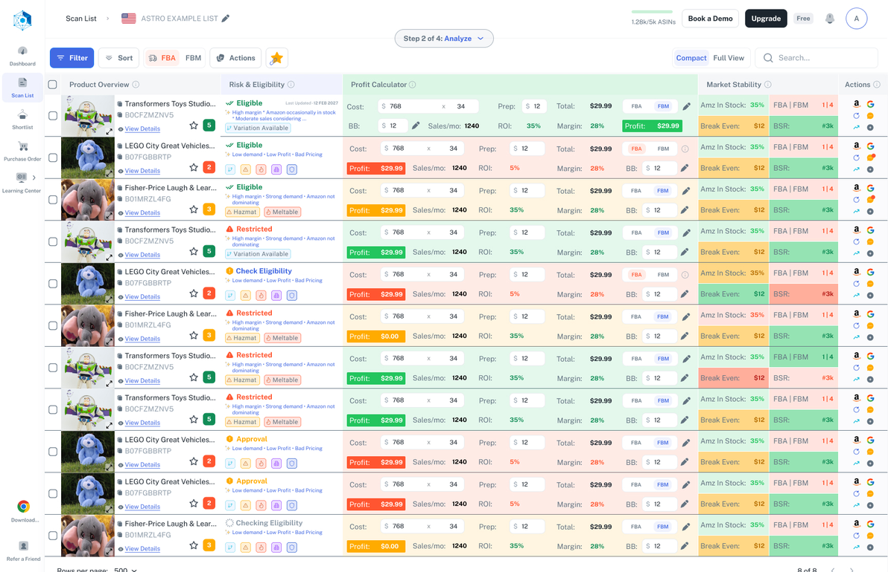
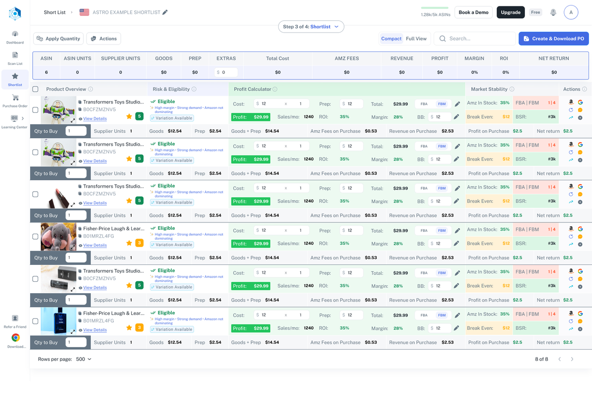
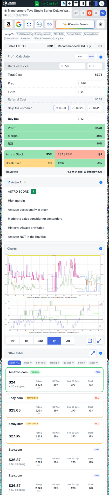
If I buy this product at this price, will I make money?
Answering it once means the supplier’s price list, the Amazon listing, an eligibility check, a fee estimate, a sales‑rate guess, and a look at whether Amazon itself is competing. Six tabs and a spreadsheet, per product.
So sellers batch it. They check the twenty products that look promising and ignore the rest of the list — which means the decision gets made by whatever sorts to the top of a spreadsheet, not by what is actually profitable.
Not “build an analytics tool”. Compress a six‑tab research task into something a seller can run across an entire supplier list.
Two questions that constantly get confused. Analytics answers the first. Only people answer the second.
Google Analytics and Hotjar to find which steps lost people and which screens they scrolled past. That narrowed where to look — it never said what to change.
On the steps the data flagged. Watching someone source a product with their own spreadsheet open shows which columns they read and which they scroll past.
Clickable prototypes tested against the questions research raised, so disagreements were settled by watching someone use it rather than by opinion.
Sellers don’t trust a number they can’t take apart. They work in lists, not single products. And the moment of highest anxiety isn’t analysis — it’s connecting their Amazon account.
One decision shaped the whole structure: a seller should never have to translate between “where am I in the process” and “where am I in the app”. The five workflow steps — connect, scan, analyse, shortlist, generate PO — are the five nav items.
Each step also leaves behind an object you can return to: a scan, a shortlist, a purchase order. Sourcing is not a session. It takes days, and it gets interrupted.
Step one asks a stranger to connect their Amazon Seller Central account — before the product has proved anything. Refusing is rational, so the screen answers the three objections in the order they arrive.
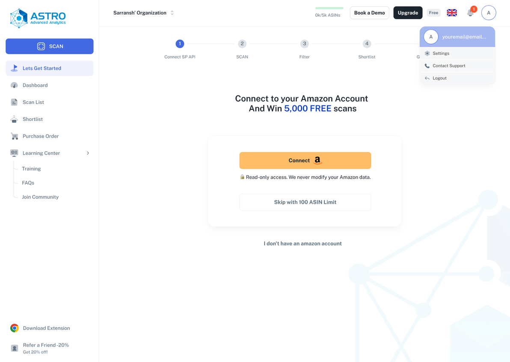
Some visitors have no Amazon seller account at all. The obvious handling is an error state. Instead that link leads somewhere: a bootcamp and a mentorship programme. A person who cannot use the product today becomes a seller later.
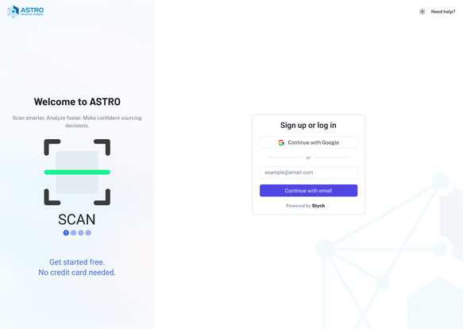
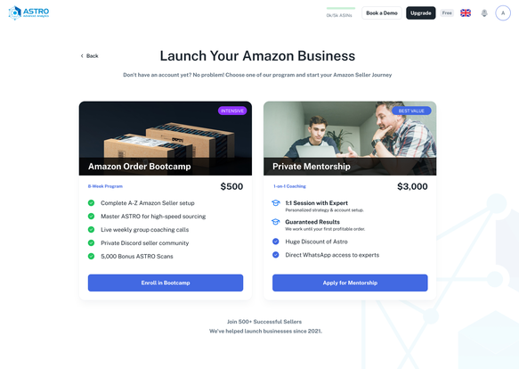
First time through, a seller is learning a sequence, so the stepper is the teaching. Every screen is one step with the other four visible above it.
The second time, that stepper is in the way. They have a new supplier list and want it scanned. Five screens to reach an upload box is a tax on the users you most want back. So there are two flows: a guided multi‑step journey for new users and a single‑page version for returning ones.
Two flows to design, test and maintain instead of one. Worth it, because the alternative punishes the behaviour the product depends on: coming back.
Different column names, different order, half of them with a logo in the first three rows. This is the step where an import flow usually dies.
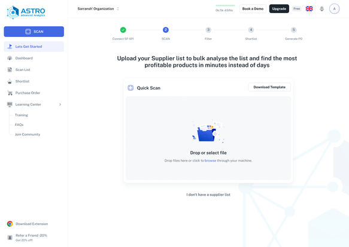
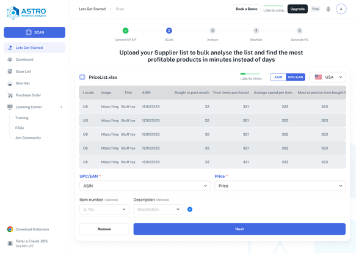
After a few weeks a seller has many scanned lists. Name, size and date tell you nothing. So each list carries its score distribution instead — a stacked bar of how many products scored 1 to 5, red through green.
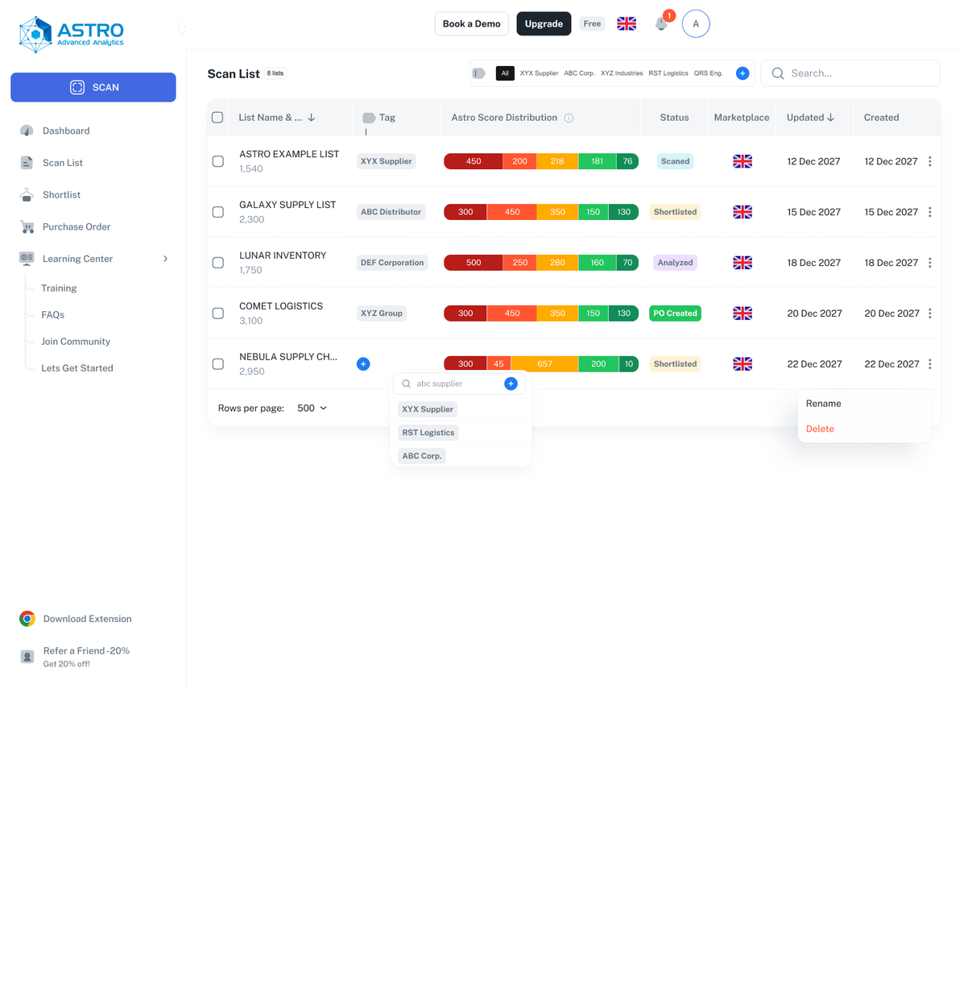
Each list also carries its state in the workflow: Scanned → Analyzed → Shortlisted → PO Created. The process lives on the object, not in the user’s memory.
This is where a seller spends the day, and it is unapologetically dense. Consumer instinct says reduce, hide, progressively disclose. Applied here it is wrong — a seller compares hundreds of rows, and anything behind a click is a click multiplied by three hundred. For this user, density is speed.
Image, title, ASIN, score badge.
Restricted, hazmat, meltable, approval needed.
Cost, fees, profit, margin, ROI.
Amazon in stock, break even, BSR.
Up to here every number is per product. But a seller places an order, and the order has a budget. So the Shortlist adds a running total bar — set quantities per row and the whole order recalculates live above them.
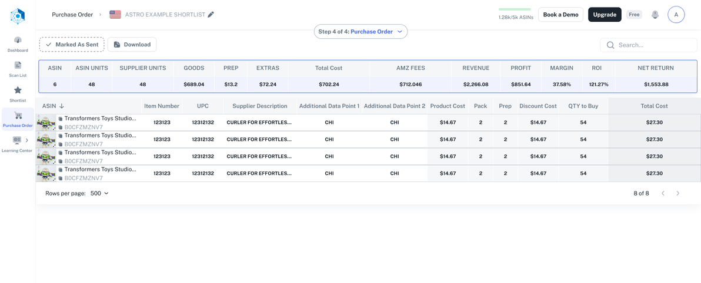
A lot of sourcing happens while browsing. The extension puts the analysis on the page the seller is already looking at — including sites that have no ASIN at all, which is where products nobody else has found still exist.
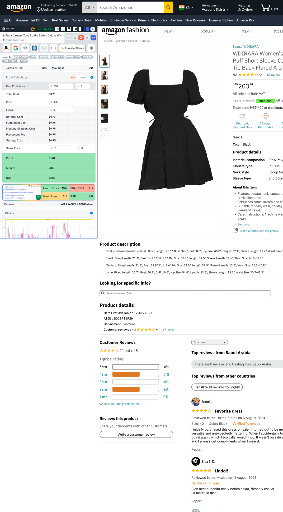
“Est. Hours Saved” is not operational. It is the product’s whole argument, in the unit the seller complained about.
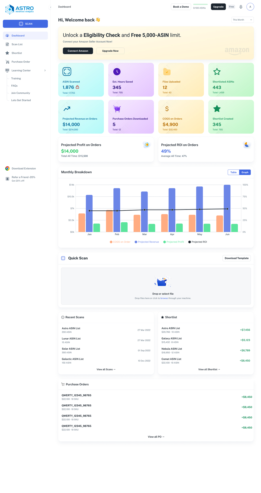
Every colour maps to a decision the seller makes. Nothing was chosen because it looked good next to the logo.
Blue is interaction. Green‑amber‑red is judgement. They never swap — so the traffic light learned on the product table reads the same in the extension, the scan list and the shortlist.
Public Sans throughout, on a deliberately tight scale. A table with fourteen distinct text sizes is a table nobody can scan.
The table is intimidating on first sight. Everyone who reviews it says so, and they are right. The pull to simplify is strong, and here it is the wrong instinct.
A simplified table demos better and works worse. The people who find it intimidating see it for thirty seconds. The people who use it see it for hours, and are already fluent in these columns — they have maintained them by hand in a spreadsheet for years.
So I kept the density and paid for it elsewhere: column grouping so the wall reads as four regions, colour so the first pass needs no reading, and a compact view for scanning versus a full view for inspecting. The honest cost is the first ten minutes.
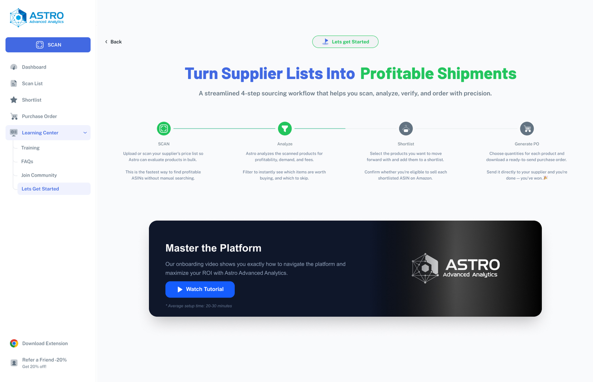
Eligible, restricted and check‑eligibility are separated by green, red and amber and in places by little else. For a colour‑blind seller, the fastest part of this interface is the least usable part of it. Every state should carry a shape or a short label so colour is reinforcement, not the whole signal. This is the change I would make first.
I know where people left the funnel. I do not know which columns they use once they are inside the product table — which would have settled the density argument with evidence instead of reasoning.
Splitting new and returning users was right for the user and a real cost for the team. One adaptive screen that collapses as competence grows would serve both and halve the maintenance.